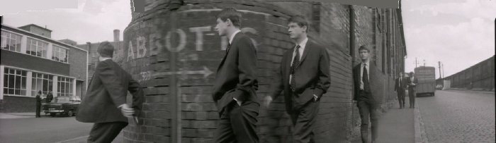
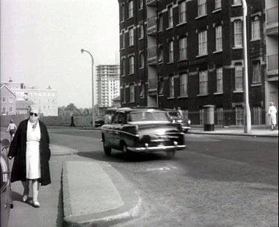
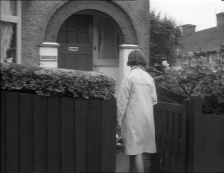
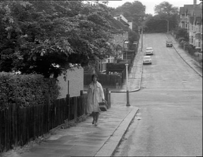
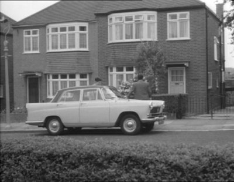

|
|
HELP FIND THE FOLLOWING LOCATIONS
PAGE 97
GIDEON’S WAY: The Tin God (John Gilling: June/July 1964)
Unknown 1: John ‘Benny’ Benson and Freddy Tisdale escape from H.
M. Prison Strangeways,

 Previous shots
of the prison are Strangeways,
but this one is not easily identifiable.
Previous shots
of the prison are Strangeways,
but this one is not easily identifiable.
St. Pancras Way, NW1 - Immediately after escaping from Strangeways, John ‘Benny Benson’ (Derren Nesbit) and Freddy Tisdale (John Hurt) run up this road and over onto the railway.

Marylebone Goods Yard: John ‘Benny Benson’ (Derren Nesbit) and Freddy Tisdale (John
Hurt) make their way across railway sidings to a shed were clothes and
money have been stashed for them.
(Identified by Alan Field, August 2007)


 from Alan Field
from Alan Field
Goods Way, NW1: John ‘Benny Benson’ (Derren Nesbit) and Freddy Tisdale (John
Hurt) make their way to where a car has been left for them. They have to change their
plans when Freddy spots policemen investigating the vehicle.
(Identified by Geoff Dodd, July 2008)



Devon Mansions, Jamaica Road, SE1
Police
units are summoned to converge on
(Spotted by Stephen Carter, September 2007)

Police
converge on
(Identified by Stephen Carter, September 2007)

Bermondsey Wall, SE1
John
‘Benny’ Benson (Derren Nesbitt), Syd Benson (Michael Cashman) and Freddy
Tisdale (John Hurt) are on the roof of the warehouse and watch as police cars
begin arriving.
(Identified by Stephen Carter, September 2007)

Unknown 7: Gideon and Keen return to the station.


Also seen in THE SAINT: The Set-Up (Roy Baker: October 1964)
(Identified by Alan Field, August 2007)
 
 Probably near
Probably near
Unknown 9: On their way into London John ‘Benny’ Benson and Freddy Tisdale spot a Police road block.


 Sam Denham –
“Could be Green Street/Cowley Hill leading down into Borehamwood.? Also used in IM Bank
Raid, though thought it might be more built up ? “
Sam Denham –
“Could be Green Street/Cowley Hill leading down into Borehamwood.? Also used in IM Bank
Raid, though thought it might be more built up ? “
Unknown 10: Hiding in

Think you know a spot? Need a bigger image? Email me.
< Previous | Index | Avengerland | Next >
Copyright © 2003 Anthony R. McKay